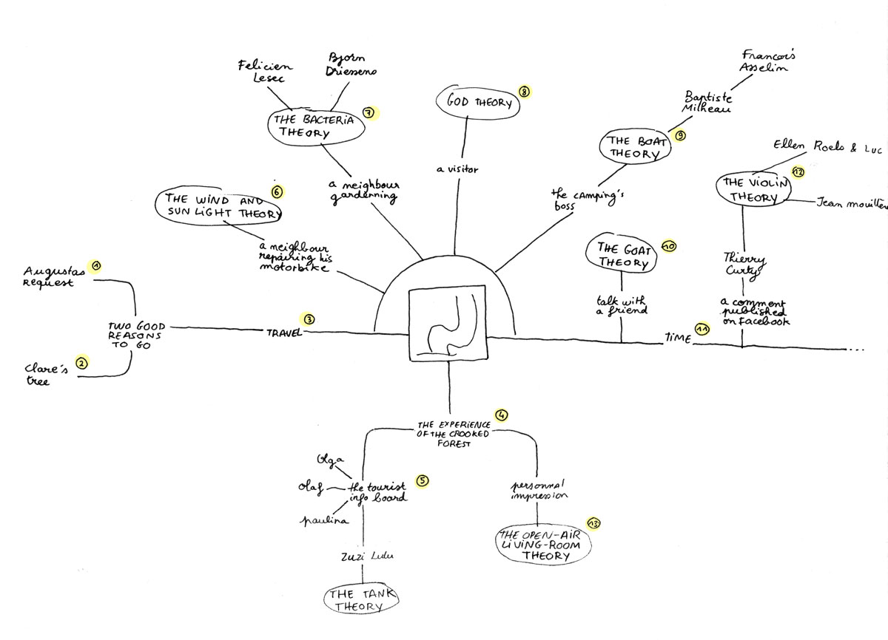

Diane Rabreau
4 oktober, 2014
"I am at the Crooked Forest ... As you said during our Skype session, these trees do look like they are sitting relax."
— text message to Clare Noonan on September 1st, 2014
On July 26, I received a request from Augustas Serapinas sending me the geographic coordinates of a place in Poland and asking me: "Go there and tell me why the trees are curved". In a place known as « the Crooked Forest », about one hundred trees are twisted like hooks. How can a tree grow semi-circular ? A hurricane, God intervention, man experiment... you’ll find many theories on the Internet, mixed on a big soup of mystery.
On the site, I’ve found even more theories. World War II’s tanks parking there ? Goats eating the top of the trees? A bacteria ? Even the final answer isn’t completely well-founded : «
This information comes from the books I’ve read during my life. I did researches on the Internet but I couldn’t find anything. The Internet creates its own truth. This is the success of a rumor that imposed itself. (...) I hope one day, somebody will find traces of my telling, but I honestly doubt it with Internet being so intrusive. My credibility is based on the fact that the statements that people gave you were all absurd... and wrong.», says Thierry Curty.
Here is a diagram of my approach to find the still-hypothetical answer to the question:
